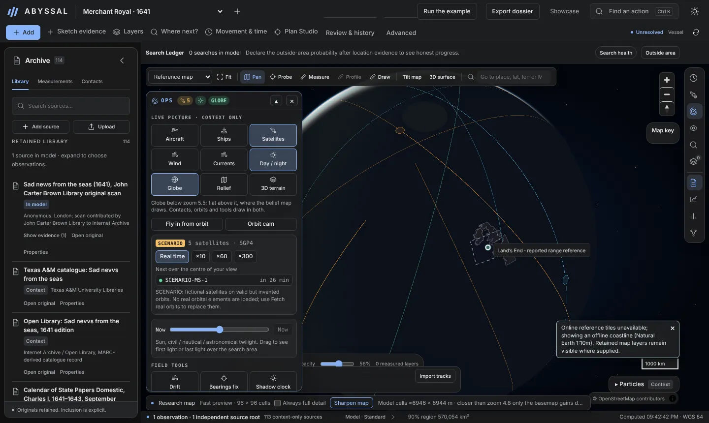

Case studies & technical notes
Standalone piecesThe ABYSSAL series
Series overview →
Finding what is lost: a tour of ABYSSAL
A guided walk through a Bayesian search workbench: what you see in the first ten seconds, what each panel is for, and why the map never moves unless a person says so.

A map that refuses to lie
A probability heatmap is an argument, and most of them cheat: rainbow ramps that invent ridges, sea-coloured low ends, resolution they do not have, and context smuggled in as evidence. How ABYSSAL's interface is designed so that what you see is exactly what the model believes.

The arithmetic of not finding
Negative evidence, the outside share, positive clues that cannot double-count, correlated misses and information in bits: the mathematics under every pixel of the map, with a grid you can search yourself.

Five echoes, one witness
Why five reports that trace back to one source must count once, how ABYSSAL pools them, and why the same mistake quietly breaks intelligence assessments, risk models and machine-learning explanations.

Where next, and when to stop
Optimal effort is water poured into a probability landscape. Turning bits into money tells you what an hour of searching is worth, and the same arithmetic tells you, honestly, when to go home.

Signals from the deep
Kelvin's 19.47°, a ship that appears hundreds of metres from where it is, hydrophones that hear an implosion across an ocean, and the one rule that keeps clever detectors from fooling the map.

The operating picture
Live aircraft and ships, satellites and their swaths, wind, rain and earthquakes, a globe you can fly in from orbit, and a kit of field tools: what a search tool looks like when someone has to live in it all day.

Three cases, two refusals
A treasure ship reported in a 1641 pamphlet, an airliner that left only satellite handshakes, and a wreck found after two years. What each one tests, and why the most important results are the two places ABYSSAL declines to give an answer.

Building it honestly
Ten invariants, an engine audit, a calibration gate and a file that lists what is unfinished. What it takes to keep a probabilistic system honest, and where honest probability is worth money.